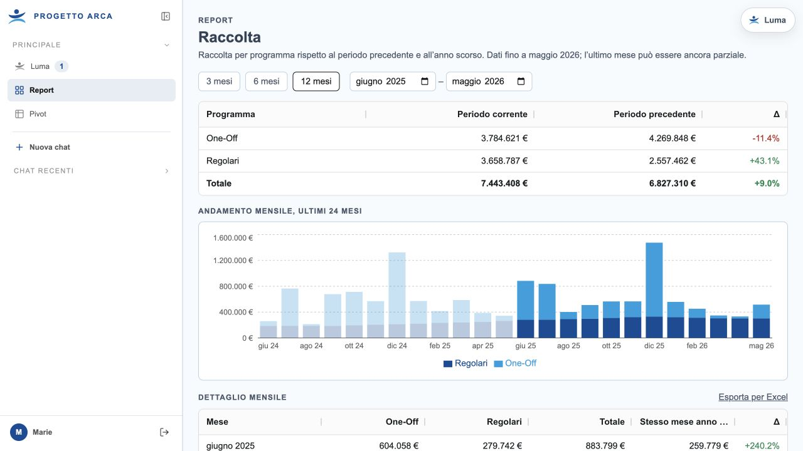
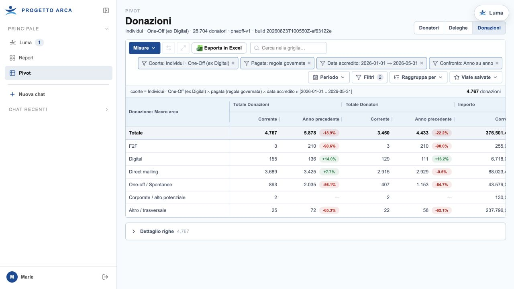
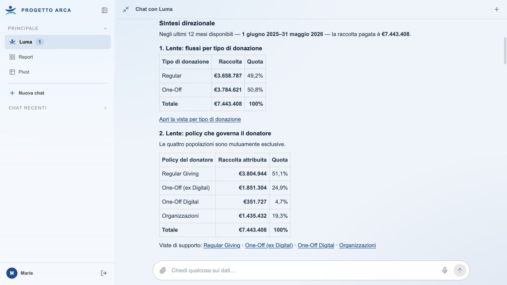
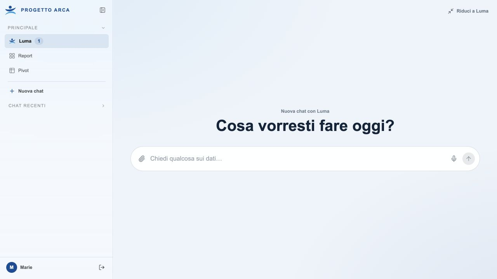
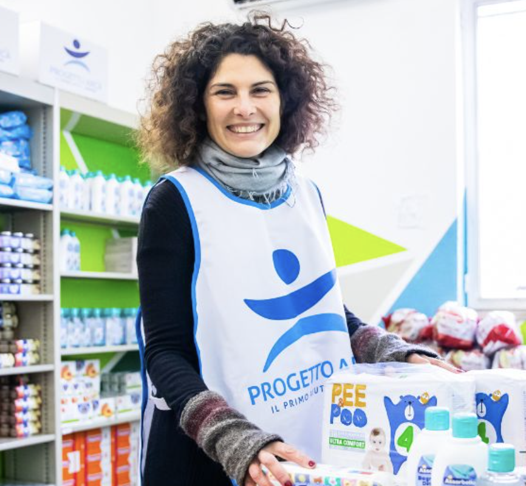

Che cosa sta cambiando?
Nel periodo, nella raccolta e nelle popolazioni.
Progetto Arca AI
Una nuova esperienza per trasformare i dati di raccolta fondi in comprensione, evidenza e prossima decisione.
La domanda
Nel periodo, nella raccolta e nelle popolazioni.
Canali, campagne, coorti e concentrazione del valore.
Un approfondimento, una priorità o una Next Best Action.
La fondazione
Ogni donatore appartiene a un solo perimetro analitico. I totali si riconciliano, le regole restano esplicite e ogni evidenza può essere riaperta.
escluso Digital
Perimetro dimostrativo riconciliato · dati disponibili al 31 maggio 2026
Lo stesso dato, tre profondità
Che cosa sta succedendo e come cambia rispetto al periodo precedente.

Le popolazioni e le righe che permettono di verificare ogni affermazione.

L’interpretazione contestuale, calibrata sul ruolo e collegata alle evidenze.

L’AI lavora prima dell’accesso
Può osservare ciò che conta per un ruolo, aggiornare il briefing e segnalare soltanto i cambiamenti che meritano attenzione.

Un caso reale
Gennaio–maggio 2026 rispetto allo stesso periodo 2025.
Contrazione complessiva delle due policy One-Off individuali.
“Il calo è diffuso o concentrato in poche donazioni eccezionali?”
del calo di Altro/trasversale è spiegato dalla variazione dei contributi sopra €10.000.
Soglia diagnostica ad hoc, esplicitamente dichiarata.5 donatori · €416.669
€200.000
Non attribuire ancora il calo alla performance del canale.
Le donazioni eccezionali risultano associate ad attività di Cultivation One2one.

Non solo rischio
Luma qualifica il segnale. Una persona decide se e come attivare la relazione.
Nessun contatto autonomo con il donatore.
Una collega digitale, responsabilità diverse
Che cosa cambia nel portafoglio, perché e quale decisione richiede attenzione.
Performance, equilibrio fra domini, canali, team e qualità della relazione.
Popolazioni, campagne, anomalie e opportunità pertinenti al proprio perimetro.
Priorità spiegabili, evidenze, contesto e prossimo passo sotto controllo umano.
Il contratto dell’AI
Che cosa è cambiato.
Periodo, baseline e perimetro.
Contributi, concentrazione e contesto.
KPI, popolazione e righe in Pivot.
Che cosa valutare adesso.
Che cosa non sappiamo ancora.
Fatti, interpretazioni e raccomandazioni non vengono confusi.
La demo
Un percorso breve, costruito sulle stesse evidenze appena raccontate.
Le due priorità sono già presenti al primo accesso.
Apriamo la contrazione One-Off e il segnale HVD.
I link riaprono dati, filtri e popolazioni in Pivot.
Mettiamo alla prova l’interpretazione con una domanda critica.
Programmiamo un nuovo monitoraggio con linguaggio naturale.
Il prossimo passo, insieme
Il dato arriva con una spiegazione, un’evidenza e una prossima decisione.